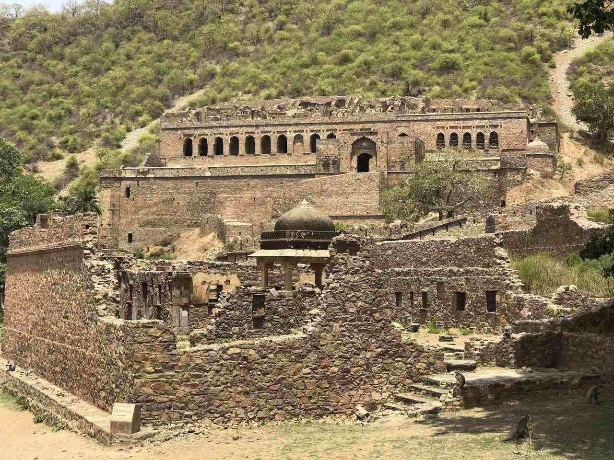
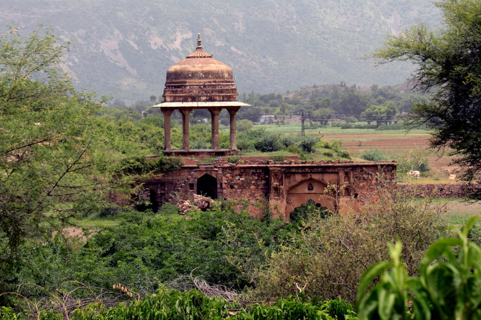
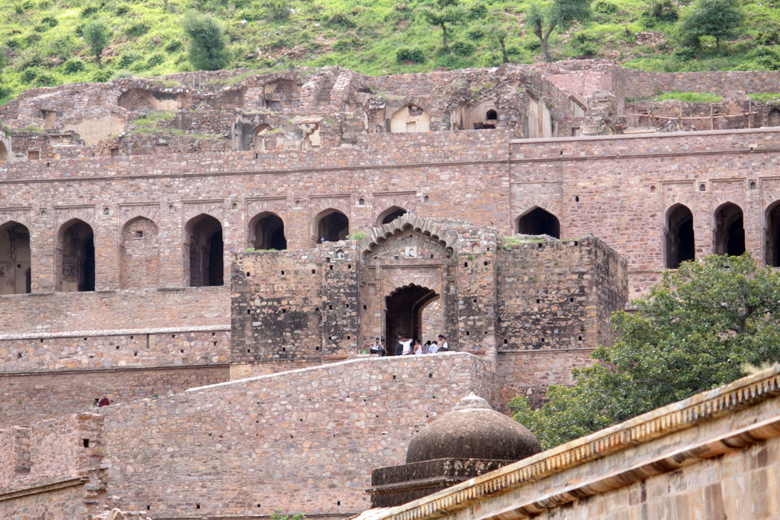

| |
Haunted Places | Paranormal Activities | Exorcisms & Possessions | Social Platforms | Horror Movies | Common Signs | Contact Us |
|---|
Bhangarh FortRajasthan, India |
The Bhangarh Fort is a 16th-century fort built in the Rajasthan state of India. The town was established during the rule of Bhagwant Das as the residence of his second son, Madho Singh. The fort and its precincts are well preserved.

Bhangarh Fort is known as the most haunted place in India, and perhaps the greatest unsolved mystery. There is no doubting the fact that anything associated with the supernatural attracts a huge amount of attention and the deserted city of Bhangarh cashes in on that very idea. The many haunted stories of Bhangarh Fort have transformed it into a bucket list destination of sorts.
Curious travellers come in order to experience cheap thrills and while some go back disappointed, others simply cannot have enough of the suspense associated with the story of the Bhangarh Fort. If you happen to be one of those inquisitive travellers, it is imperative for you to visit this place and find out for yourself.
Is the Bhangarh Fort haunted?
Most people are of the belief that Bhangarh Fort is haunted and there is no dearth of tales that help in amplifying the mystery that is Bhangarh. Venturing into the fort after sunset is nothing short of an act of bravery as it is supposed to be a centre for paranormal activity and the Archaelogical Survey of India therefore has prohibited people from visiting the Bhangarh Fort at night.
Of the many Bhangarh stories that the locals like to indulge in, the most popular is that of Emperor Madho Singh who built the city after attaining the approval of Guru Balu Nath, an ascetic who used to meditate there. The saint gave his approval on the condition that the shadow of the Emperor’s palace should never fall on his retreat.
If in case it did, the city would crumble into ruins. Once the construction was completed, the retreat of Guru Balu was unfortunately shadowed by the palace. Having incurred the saint’s wrath, Bhangarh immediately transformed into a cursed city and could never be rebuilt as no structures ever managed to survive in it. It is interesting to note that the tomb of Guru Balu Nath can still be found among the ruins.

Another Legend of Haunted Bhangarh Fort
Another Bhangarh Fort story pertains to Princess Ratnavati. According to legends, her beauty was nonpareil and stories of her surpassing physical attractiveness even transcended kingdoms and borders. When she turned eighteen, suitors from several states asked for her hand in marriage. Of all these suitors was a sorcerer named Singhia who was aware of the fact that he was no match for the princess. However, he decided to entice her with the magical powers he possessed.
He was lucky enough to see Princess Ratnavati’s mistress in the market and enchanted the oil she was purchasing with black magic. He was of the hope that the princess would surrender herself to him upon touching the oil. However, his attempt was futile as Ratnavati witnessed his trick and poured the oil on the ground which then morphed into a rock, rolled towards the magician and crushed him.
Before dying, Singhia cursed the city of Bhangarh to death and as a result, it never witnessed any rebirths. Moreover, in the battle between Ajabgarh and Bhangarh, princess Ratnavati was killed, thus adding more weight to his malediction. Hopes, however, never die as several locals are of the belief that she has returned in a different form and will ultimately come back to end the unfortunate spell on Bhangarh.

While Bhangarh fort story has been rubbished by scientists, nothing stops the villagers from believing that it is a sanctuary for ghosts. People have supposedly often heard noises that are unaccounted for. The locals claim to have heard women screaming and crying, bangles breaking and strange music emerging from the fort. There have been instances where a special perfume was emanating from the Bhangarh Fort along with ghostly shadows and inexplicable lights. Some people have felt the strange sensation of being followed and even slapped by an invisible entity. It is believed that if a person enters the fort after sunset, he/she will never ever come out of it. The doors are therefore always locked after dusk and entry into the Bhangarh Fort at night is absolutely forbidden. Are all of the Bhangarh Fort stories factual or just strange pieces of fiction? Is the Bhangarh Fort really haunted? Nobody can say. Ghost hunters perhaps can.
Beyond The Veil |
||
|---|---|---|
|
Explore the unexplained and discover mysteries that challenge the ordinary. |
||
|
||
|
|